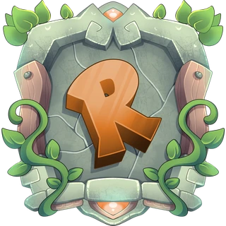

Un peu de tech.
Beaucoup de moi.
Moi, c’est TehZombiJesus. Je garde les serveurs en marche, je rassemble du monde et mon homelab n’est jamais tout à fait terminé.
Des mondes différents.
La même personne derrière.
De l’infrastructure, des communautés et quelques redémarrages tard le soir.
Dans le homelab ↗
Ce qui roule aujourd’hui, la suite et les raisons derrière les changements.
The Crypt ↗
Mon coin du Web pour jouer, partager et passer du bon temps.

Ouverture à venirRuenix MC ↗
Le réseau Minecraft que je contribue à gérer et la communauté qui se forme autour.
Salut, moi c’est Kevin.
Admin système au travail.
Curieux de nature.
Je suis habituellement celui qui finit par s’occuper des serveurs : les installer, les garder en ligne et comprendre pourquoi ils ont arrêté.
Mon quotidien touche l’infrastructure et la coordination chez Nox Interactive, l’équipe de Ruenix et un homelab qui trouve toujours une façon de grandir. Je ne suis pas développeur; mon domaine, ce sont les systèmes et les communautés.
Ce qui m’occupe en ce moment ↗De mon petit
coin du Web.
Serveurs en marche.
Manette prête.
Minecraft entre amis. Un peu de chaos dans GTA. De l’ARAM, juste pour le plaisir. Quand tout roule, c’est probablement là que tu me trouveras.
Viens faire un tour ↗Il y a une personne
derrière les serveurs.
Discord pour discuter.
Le courriel pour quelque chose de plus officiel.